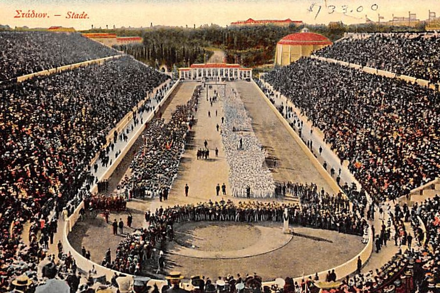
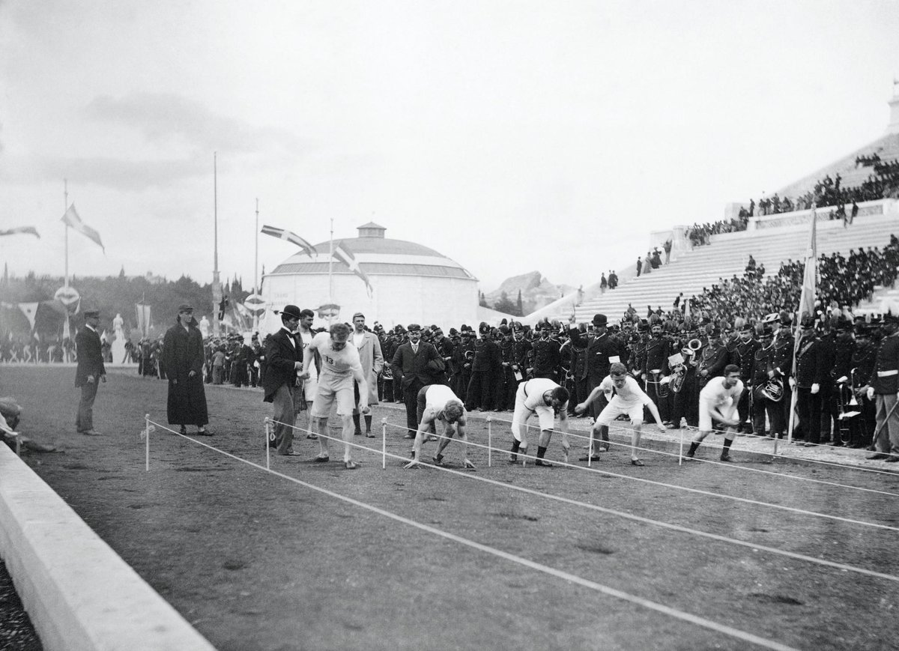
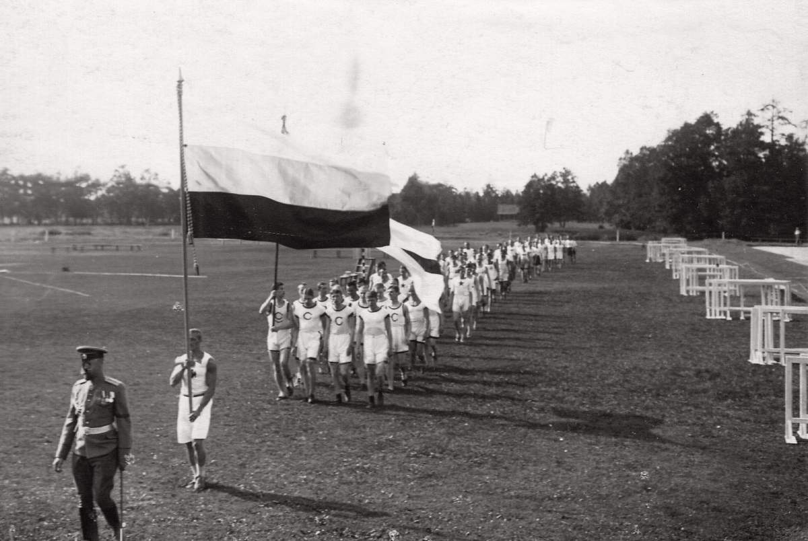

Бег — это естественное движение человека, которому дети учатся в первые годы жизни. Быстрый бег помогал нашим далеким предкам быть более успешными в охоте или убежать от хищников. В Древнем мире, где физическая сила и выносливость считались основными качествами, необходимыми для долгой и успешной жизни, бег стал одним из показателей подготовленности.
Известно, что соревнования по бегу на скорость проводились задолго до нашей эры в древних странах Переднего Востока (Междуречье, Месопотамия, Египет). Эти состязания традиционно приурочивались к праздникам.
Скорость перемещения древних и средневековых армий зависела от скорости передвижения наименее мобильной ее части — пехоты. Тренировки по бегу (марш-броски с полной выкладкой) были неотъемлемой частью жизни любой армии. Особо одаренных воинов, которые могли с высокой скоростью пробегать значительные расстояния, назначали гонцами. Они переносили свитки с информацией из города в город.
Первые официальные соревнования по бегу — Олимпийские игры 776 г до н. э. На этих соревнованиях спринтеры бежали только один стадий (192 м). В 724 г. до н. э. был введен бег на два стадия. Прошло еще четыре года, и древние греки решили ввести в программу бег на 24 стадия. Существуют записи, которые подтверждают, что уже в то время у древних греков были свои системы тренировок бегунов. Практиковались тренировки со смешанным темпом, специальные беговые упражнения (бег с высоким подниманием, захлест голени, бег прыжками). Победители игр становились в своих городах героями, им ставили памятники и воспевали в стихах. Благодаря таким одам до нас через три тысячелетия дошли имена первых звезд легкой атлетики — Астила, Эхиона и Фанаса.
В 394 г. н. э. античные олимпийские игры прекратили свое существование, и в наступившем темном времени соревнования по бегу практически не проводились. Забеги на скорость устраивались во время продолжительных средневековых празднеств, но не были настолько популярны и многочисленны, как в древние времена.
Дальнейшее развитие бег как самостоятельная дисциплина получил лишь в XVIII в.
Наибольшую популярность бег приобрел на Туманном Альбионе: здесь проводились состязания на больших дорогах между городами или на дорожках ипподромов. Устраивались также соревнования по часовому бегу. В 1837 г. в Англии был проведен первый забег с препятствиями, в котором участвовали студенты колледжа города Регби. В 1845 г. в Англии был устроен забег на длинную дистанцию.
Однако настоящий триумф спорта, в том числе бега, состоялся в 1886 г, когда под руководством Пьера де Кубертена открылись первые Олимпийские игры современности. На соревнованиях в Афинах были представлены следующие дистанции — 100, 400, 800, 1500, 110 м с барьерами и марафон. Постепенно в программу игр добавлялись все новые и новые беговые виды. Стартовать на этих состязаниях можно было из любой удобной для бегуна позы.
 В наше время бег непрерывно развивается. Несмотря на то что основы техники бега (спринтерского и стайерского) были сформированы более века назад, современные талантливые тренеры разрабатывают новые подходы к тренировочному процессу и улучшению техники. Совершенствуются средства восстановления, благодаря чему бегуны приобретают большую выносливость. Отдельно необходимо сказать о массовости занятий бегом. В развитых странах бегать по паркам, городским улицам, тротуарам — привычное дело. Любители бега участвуют во всевозможных массовых пробегах, объединяются в клубы. Наибольшее развитие любительского бега наблюдается в марафоне и длинных дистанциях.
На крупных массовых пробегах столько желающих принять участие, что старт длится несколько часов.
В России зарождение бегового движения связано с созданием в 1888 г. кружка любителей спорта. Он был образован в местечке Тярлево под Санкт-Петербургом Петром Москвиным, который привлекал к занятиям отдыхавшую на каникулах молодежь. Через год прошли первые официальные соревнования по бегу.
На международных соревнованиях члены кружка дебютировали в 1901 г. в Швеции. В первом чемпионате страны в 1908 г. в Санкт-Петербурге приняло участие всего 50 атлетов (из столицы и Риги). В 1912 г. делегация российских легкоатлетов впервые участвовала в Олимпийских играх.
Однако из-за низкого уровня развития бега в России, недоукомплектованности команды никто из отечественных атлетов не завоевал призовых мест. Основная проблема занятий бегом в дореволюционной России — избранность этого вида спорта: им занимались только состоятельные граждане.
В советское время бег стал действительно массовым явлением. На первом чемпионате СССР по легкой атлетике в 1923 г. участвовало 389 легкоатлетов из 40 городов страны. В спартакиаде 1928 г. приняло участие уже 1300 спортсменов не только из Советского Союза, но и 15 зарубежных стран.
Впервые легкоатлеты СССР участвовали в Олимпийских играх в 1952 г. Их выступление было успешным. На Олимпиаде 1960 г. советская легкоатлетическая сборная одержала победу над американскими бегунами. Впоследствии кроме Олимпийских игр главными международными соревнованиями стали матчевые встречи СССР — США, в ходе которых поочередно побеждали оба соперника.
Со временем благодаря совершенствованию тренировочного процесса, применению новых технологий при изготовлении покрытия беговых дорожек, модернизации одежды легкоатлетов и способов измерения времени результаты росли.
Беговая дорожка античных олимпийских игр была грунтовой. Атлеты стартовали, опираясь на мраморные плиты. Беговая дорожка первых Олимпийских игр современности была из уплотненного грунта. Следующим шагом стало покрытие дорожек слоем гари. Прогресс не стоял на месте, беговые поверхности выполняли из бетона, асфальта, резинобитума.
Сейчас устраивают покрытия из полиуретана на асфальтовой основе.
Совершенствуется и беговая обувь. На заре развития бега как вида спорта атлеты занимались в обыкновенных мягких туфлях. С появлением гаревой дорожки для лучшего сцепления использовались туфли с длинными острыми шипами. Когда же стадионы стали покрывать дорожками из резинобитума и полиуретана, длина шипов на беговых туфлях уменьшилась. Современная тренировочная обувь полностью повторяет изгибы стоп, позволяя смягчать ударное действие при беге на суставы и связки. Одежда легкоатлетов претерпевает изменения в сторону уменьшения ее площади (особенно у женщин). В прошлом остались длинные футболки и шорты. Теперь бегуньи тренируются и выступают в коротких топах и минишортах.
Над улучшением характеристик материалов трудятся целые спортивные лаборатории. Если раньше драгоценные секунды измеряли с помощью ручного секундомера, то теперь этот процесс производится автоматически: с помощью системы датчиков, которые установлены в стартовые колодки. Измерить результат можно с точностью до сотой доли секунды.
С каждым годом растет число участников массовых забегов, спортсмены объединяются в клубы любителей бега, которые есть практически в каждом крупном городе России.